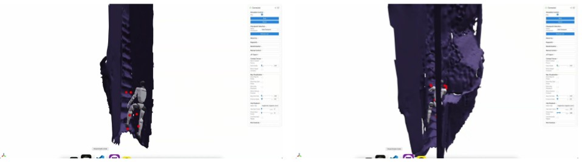
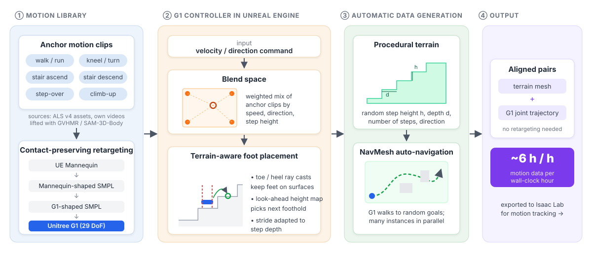
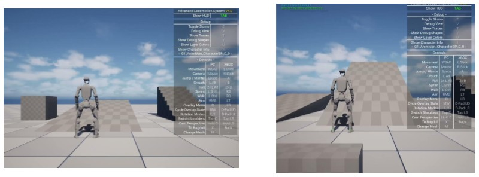
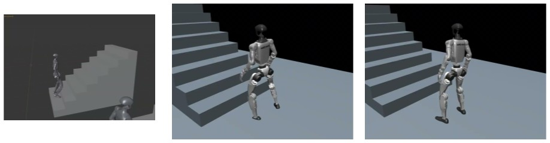
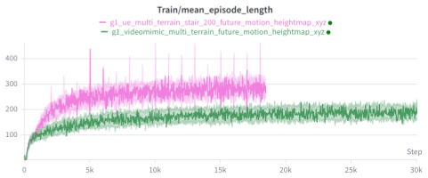
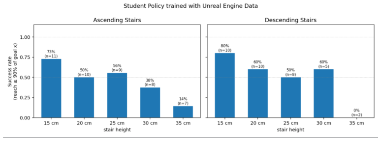
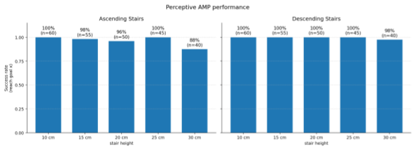
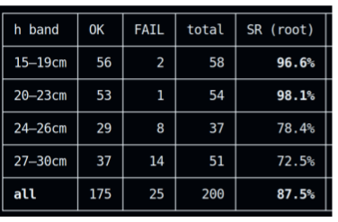

Idea. Instead of reconstructing terrain and human motion from monocular video, we drive a Unitree G1 character through realistic Unreal Engine scenes and record perfectly aligned (terrain, motion) pairs.
TL;DR
Motion tracking gives humanoids natural, human-like gaits, but almost all motion data is recorded on flat ground. Video-based real-to-sim pipelines (VideoMimic, CRISP) recover stairs and obstacles, but the reconstructed scenes and motions are often misaligned (feet floating, sliding or sinking into the terrain).
We built a pipeline that generates aligned terrain + G1 motion pairs inside Unreal Engine: a G1-specific character controller, procedural stairs, and automatic NavMesh navigation. It produces roughly 6 hours of motion per hour of wall-clock time.
A terrain-aware motion-tracking policy fits the Unreal data well (94% success on 200 stair motions, vs. 67.5% on VideoMimic's 123 clips).
However, the distilled velocity-command policy did not beat a perceptive AMP baseline in the style of Hiking in the Wild on stairs. On top of that, the motion diversity from Unreal was limited, and every new terrain type needed a lot of manual work, so we stopped the project. This page documents what we built and what we learned.
Motivation
Humanoids should be able to move through the environments people live in: stairs, curbs, ramps, hurdles and cluttered floors. Existing approaches each have a clear weakness:
Approach
Limitation we observed
Reward-based RL (velocity tracking + height map)
Rewards have to be redesigned and retuned for each new terrain. Policies traverse terrain robustly but walk unnaturally: a crouched posture with excessive knee flexion, limping, and dragged feet.
AMP (adversarial motion priors)
More human-like style, but the style and task rewards often conflict, and the motion prior needs reference clips for each skill.
Motion tracking (BeyondMimic, SONIC, ...)
Natural motion and a simple reward, but the data is almost entirely flat-ground MoCap, so there is no terrain to track against.
Video real-to-sim (VideoMimic, CRISP)
Terrain and motion come from monocular video, but depth errors and contact mistakes cause misalignment (feet floating, sliding or sinking into the terrain). It also needs full-body footage of every terrain, plus heavy per-video inference and optimization.
Reward-based RL. Traverses the terrain, but with a low center of mass, heavily bent knees and a limping gait.AMP. More human-like style on rough terrain, learned from a handful of reference clips.
Video real-to-sim data. A failed rollout of a policy trained on VideoMimic real-to-sim clips. Scene and contact errors in the reconstructed data make the references hard to follow.

Why not video? Running the VideoMimic real-to-sim pipeline on a ladder-climbing video: the reconstructed ladder collapses into a staircase-like mesh with spurious walls, and the retargeted G1 motion penetrates the scene. The result cannot be used as training data.
Our bet was that a game engine, which has realistic assets, collision, animation blending and IK, could give us clean and scalable (terrain, motion) pairs.
Method

Data generation pipeline. (1) A small library of anchor clips is retargeted to the G1 with a contact-preserving chain. (2) An Unreal character controller blends the clips and places the feet on the terrain. (3) Procedurally generated terrain and NavMesh navigation drive the robot automatically. (4) The output is aligned (terrain, G1 motion) pairs, exported to Isaac Lab.
1. A G1 character controller inside Unreal Engine
We imported the Unitree G1 into Unreal Engine (skeleton rig and physics asset) and started from the Advanced Locomotion System v4 controller. Its humanoid animations were replaced with G1 motions. This required a careful retargeting chain, UE Mannequin → mannequin-shaped SMPL → G1-shaped SMPL → G1, with extra steps for contact-preserving foot height, ankle-tilt correction, bone-length rescaling and low-pass filtering, so that the feet stay flat on the ground. Because the robot itself walks in the engine, the recorded data needs no further retargeting, and the scene and motion are aligned by construction.

Retargeting refinement for the controller's source motions (before vs. after): feet no longer tilt forward or hover above the ground.
The G1 driven by the ALS-based controller inside Unreal Engine.Blending a few anchor clips into continuous locomotion.
2. Blend spaces + terrain-aware foot placement
Blend spaces combine a few anchor clips (walk, run, stair ascend/descend, step-over) into a continuous family of motions. For height changes we cast rays ahead of the character, predict the next footholds from the upcoming terrain, and adjust the stride so each foot lands on a step instead of catching the edge. For stairs we recorded dedicated stair motions ourselves, lifted from video with GVHMR / SAM-3D-Body, because walking clips combined with IK looked clearly less natural.
Unreal's default two-bone IK vs. our custom foot IK on the G1.Predicting the next foothold so each foot lands on a step.
3. Procedural terrain + automatic navigation
Stair scenes with randomized step height and depth are generated procedurally, and the G1 is driven through them automatically with NavMesh navigation. This produces about 6 hours of motion data per hour, with no video capture, depth estimation or contact prediction.
Procedural stair generation with randomized step height, depth and count, and automatic navigation of the G1 across them.
Policy training. A teacher tracks the Unreal reference motion given proprioception and a local height map. A student is then distilled (DAgger followed by PPO fine-tuning) to follow velocity commands without the reference motion.
The teacher is a multi-motion tracking policy in Isaac Lab (BeyondMimic-style rewards) that also receives a local height map around the robot. We first checked that motions exported from Unreal can be tracked in simulation: walking and running, 10° to 30° ramps, climbing onto a ledge, and stairs.
Unreal reference: walking up a 20° ramp.The same motion tracked in Isaac Lab.Tracking a climb-up motion onto an 80 cm ledge.

Walk motion + IK (left) vs. dedicated stair motions (right). The dedicated stair clips look much more natural.
Results
~6 h / hmotion data generated per hour of wall-clock time
94%tracking success on 200 Unreal stair motions (12 failures)
67.5%tracking success on VideoMimic's 123 real-to-sim clips
Unreal data is much easier to track than video real-to-sim data
With the same terrain-aware tracking setup, a multi-motion policy trained on 200 Unreal stair motions converged quickly and succeeded on 94% of its training motions, while the policy trained on VideoMimic's released real-to-sim clips reached 67.5%. Most of the 12 Unreal failures were ascending motions that came from outside the anchor clips of the blend space, or cases where the reference itself was poor. Note that these numbers are measured on each policy's own training motions, not on a shared benchmark.

Multi-motion tracking training curves on VideoMimic data vs. Unreal data (200 motions).
successAscending, 28 cm steps.successDescending, 22 cm steps.failureAscending, 30 cm steps: drifts too far from the reference.
Teacher tracking rollouts on Unreal-generated staircases (the translucent ghost is the reference motion).
Other findings from the tracking ablations. (1) Giving the policy a height map helps it match the reference; full xyz samples work better than heights alone, and a longer look-ahead window (17×11) beats 11×11. (2) For noisy video data, pretraining on flat-ground motions matters a lot: in one VideoMimic stair clip, success went from 0% to 90% with pretraining. (3) Fine-tuning a policy pretrained on PHUMA did not help.
The student policy did not beat a perceptive AMP baseline
We distilled the teacher into a student that follows velocity commands and evaluated both it and a perceptive AMP baseline in the style of Hiking in the Wild on unseen staircases (step heights 15 to 35 cm, step depths from height + 5 cm to 70 cm, 6 steps).

Ours (Unreal-data student). Success rate on unseen stairs of increasing step height. Performance degrades as the steps get taller.

Perceptive AMP baseline. The same evaluation. Success stays high across step heights.

Student-policy success by step height (success = the root never drifts more than 0.5 m from the reference root).
successStudent, ascending 23 cm steps.successStudent, descending 19 cm steps.failureStudent, ascending 30 cm steps.
Perceptive AMP baseline on 30 cm / 40 cm stairs.
Why we stopped
The baseline was already strong. For lower-body locomotion on stairs, a perceptive AMP policy reaches success rates close to 100% and walks reasonably naturally. Motion tracking on our data did not show a clear advantage, so the core claim (that terrain-aware motion data beats reward/AMP-based training) did not hold for this task.
Limited motion diversity. The Unreal controller mostly produces walking and stair gaits, which are not very different from what an AMP prior already covers. The real benefit of motion tracking would show up in whole-body skills such as vaulting, climbing and ladders, and those are exactly the motions that are hardest to author in the engine.
Adding terrains does not scale. Each new terrain type needed new anchor motions, blend-space tuning, root-motion fixes and IK heuristics, much of it in Unreal's C++ animation stack. The pipeline scales in quantity (hours of data) but not in variety.
Lessons learned
Data quality matters more than training tricks. With clean, aligned data (Unreal, or MeshMimic-style simplified scenes), terrain-aware tracking needs little reward engineering. With misaligned video data, it depends heavily on pretraining.
Real-to-sim from monocular video is still fragile in the wild. Contact estimation, scene recovery, scene-motion alignment and retargeting each fail in their own ways. Better depth models (MoGe, MegaSAM) help, but they are not enough on their own.
Game engines are good at geometry, not at motion. Terrain and alignment come almost for free. Producing physically plausible motions for new skills does not: engine features like root motion, blending and two-bone IK do not guarantee physical plausibility.
Pick the task where motion data is truly needed. Motion data is worth the effort for whole-body, contact-rich skills (climbing, vaulting, ladders), where reward design and AMP struggle. It is much less worth it for stairs, which RL and AMP already largely solve.